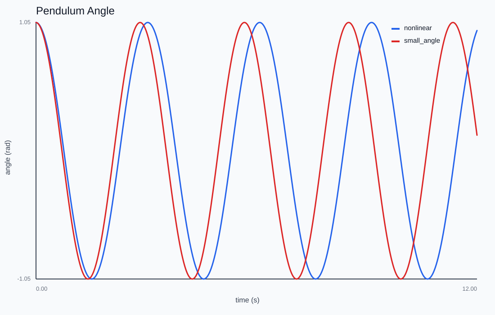
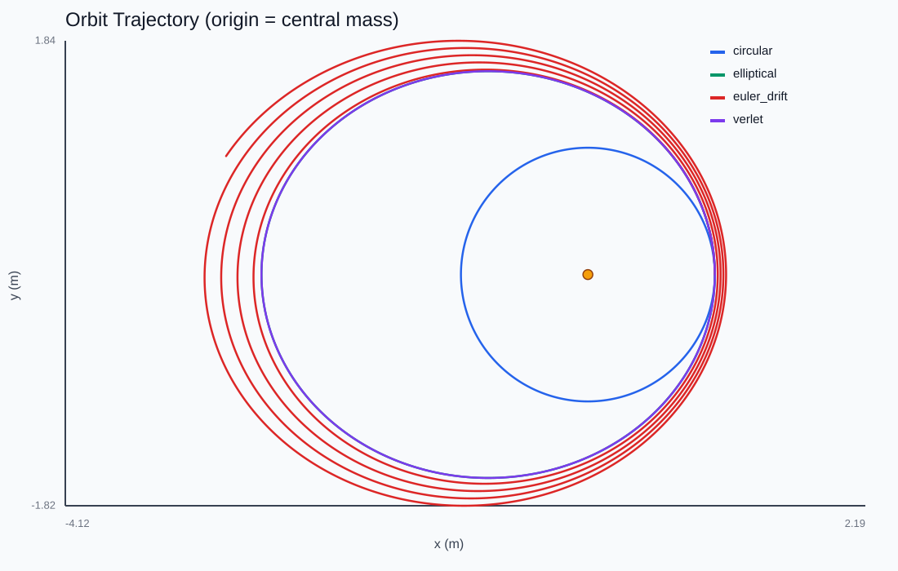
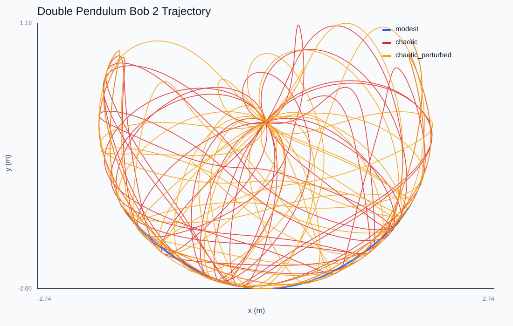
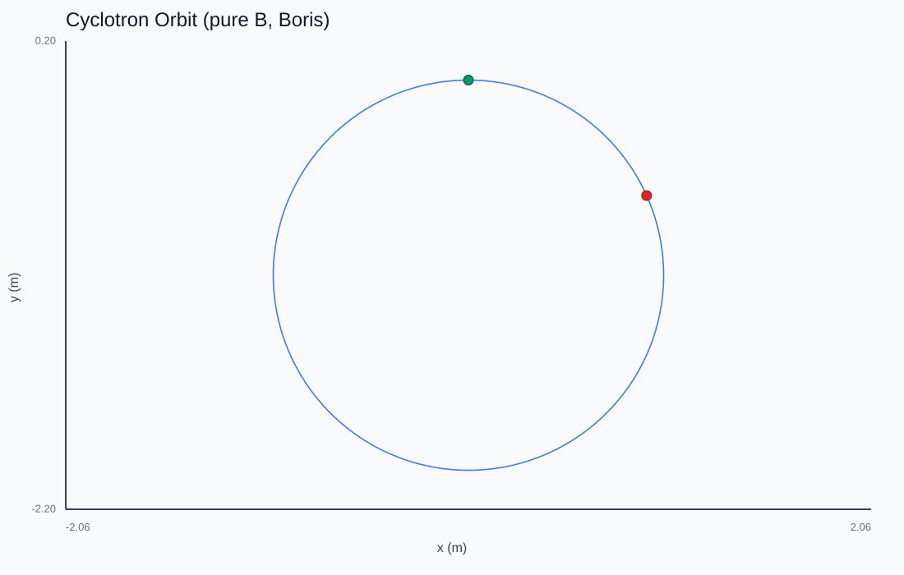
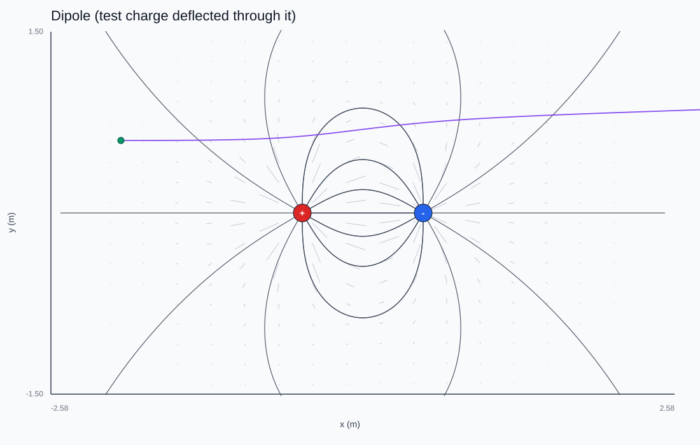

An illustrated reference guide
Physics, made by
making it run.
Twenty experiments that build physics from the equations up — and then make those equations move. Each one is a from-scratch C++ simulation; every figure on this site is a real render straight out of it, not a stock illustration. Start anywhere.
Part 1 Mechanics 8 chapters
Point masses, springs, and rigid bodies under Newton's laws — and the integrators that keep their energy honest.
 01
Projectile Motion
Constant gravity, a closed-form parabola, and the first lesson in how a timestep quietly bends the truth.
01
Projectile Motion
Constant gravity, a closed-form parabola, and the first lesson in how a timestep quietly bends the truth.

02 The Simple Pendulum When is `sin θ ≈ θ` good enough? The honest nonlinear swing versus its small-angle cartoon. 03
Mass on a Spring
Simple harmonic motion, and exactly how much damping it takes to kill an oscillation.
03
Mass on a Spring
Simple harmonic motion, and exactly how much damping it takes to kill an oscillation.

04 Kepler Orbits Inverse-square gravity, closed ellipses, and why symplectic integrators don't let orbits spiral.
05 The Double Pendulum A pendulum on a pendulum: the cleanest desktop demonstration of deterministic chaos. 06
N-Body Gravity
No central mass, no walls — just mutual gravity. Momentum becomes a near-perfect digital invariant.
06
N-Body Gravity
No central mass, no walls — just mutual gravity. Momentum becomes a near-perfect digital invariant.
 07
Hard-Disk Collisions
Impulses along the contact normal, the 90° rule, and how restitution interpolates elastic to sticky.
07
Hard-Disk Collisions
Impulses along the contact normal, the 90° rule, and how restitution interpolates elastic to sticky.
 08
2D Rigid Body
Objects gain extent. An off-center hit splits into translation and spin through one little cross product.
08
2D Rigid Body
Objects gain extent. An off-center hit splits into translation and spin through one little cross product.
Part 2 Waves 2 chapters
Couple the oscillators together and the system learns to propagate. Pulses, normal modes, and the Fourier recipe behind them.


Part 3 Electromagnetism 3 chapters
Static charges, the magnetic force that does no work, and Maxwell's fields generating themselves into light.

11 The Lorentz Force A magnetic force that does no work, the cycloidal E×B drift, and the pusher built to respect them.
12 Electric Fields Where the fields come from: superposition, field lines, and multipoles dying off at different rates. 13
Maxwell FDTD
Fields that generate themselves and leapfrog through space as light — reflecting, refracting, resonating.
13
Maxwell FDTD
Fields that generate themselves and leapfrog through space as light — reflecting, refracting, resonating.
Part 4 Thermal & Statistical 3 chapters
Where temperature, pressure, diffusion, and phase transitions emerge from many particles that individually know nothing of them.
 14
Gas in a Box
Start every disk at the same speed; collisions alone discover Maxwell-Boltzmann and the ideal gas law.
14
Gas in a Box
Start every disk at the same speed; collisions alone discover Maxwell-Boltzmann and the ideal gas law.
 15
Random Walk & Diffusion
No forces, just random steps — and predictable diffusion that forgets the microscopic rule entirely.
15
Random Walk & Diffusion
No forces, just random steps — and predictable diffusion that forgets the microscopic rule entirely.
 16
The Ising Model
"Neighbors prefer to agree" — and out of that trivial rule comes a genuine phase transition.
16
The Ising Model
"Neighbors prefer to agree" — and out of that trivial rule comes a genuine phase transition.
Part 5 Quantum 2 chapters
The particle becomes a complex wavefunction. Dispersion, tunneling, and the stationary states that set every spectral line.


Part 6 Relativity 2 chapters
A from-scratch general-relativistic ray tracer for a spinning black hole — images, spectra, shadows, and gravitational waves.


About this guide
This is a homage, in form, to Making Software by Dan Hollick — the idea that the best way to explain how something works is to show it, with pictures doing the heavy lifting. Here the subject is physics, and the pictures are not drawn by hand: they are the literal output of a physics engine written from scratch in C++.
Each chapter follows the same arc as the underlying lab notes: the question, the model, the numerical method chosen to respect what the physics conserves, and what the simulation actually shows. The running theme across all six tracks is that the integrator must match the structure you care about — symplectic for orbits, Boris for magnetic fields, unitary Crank-Nicolson for wavefunctions, monotone backward-Euler for eigenstates.
The companion essays and project notes live on the blog at ibra-niang.com, where every chapter links back for the longer write-up.